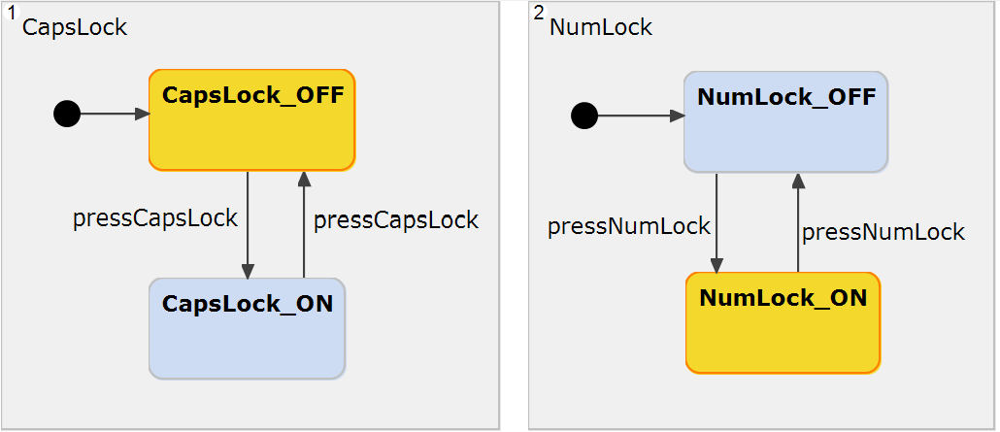
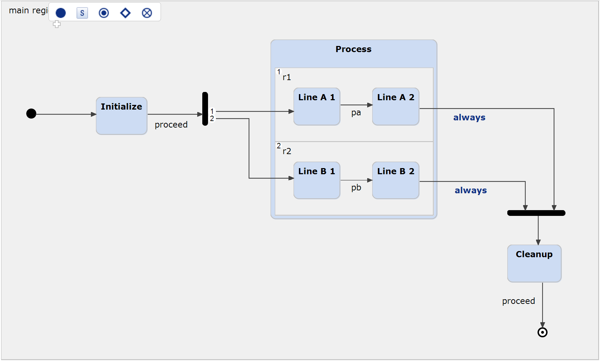

This example demonstrates the usage of orthogonal states as well as of forking and joining synchronization nodes. For more details, please also refer to our documentation.
Itemis CREATE allows to specify orthogonal regions that are executed virtually concurrently. Orthogonal regions can be modeled either on top level, or within a composite state (or subdiagram). They allow to describe that the modeled system can be in multiple states simultaneously.
Let's take the simplified example of a keyboard controller. The user can enable caps lock and num lock. These are two independent functionalities, and the keyboard can have both enabled at the same time.

Orthogonal regions can not only be defined on top level but also within composite states. The semantics explained above are the same. The following example model uses a synchronization node to fork the execution flow into both orthogonal regions. After both regions have executed their state transitions, the execution flow is joined again by a synchronization node. A joining synchronization is only executed when all incoming transitions can be taken within the same run-to-completion cycle. For more details, please refer to our documentation on Synchronizations.
